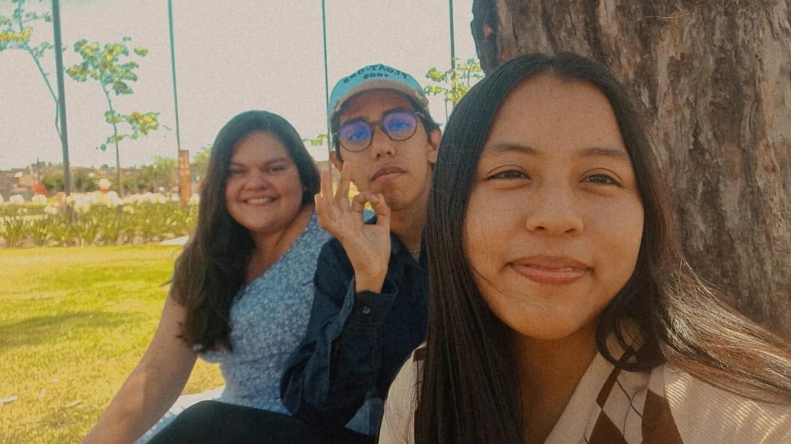
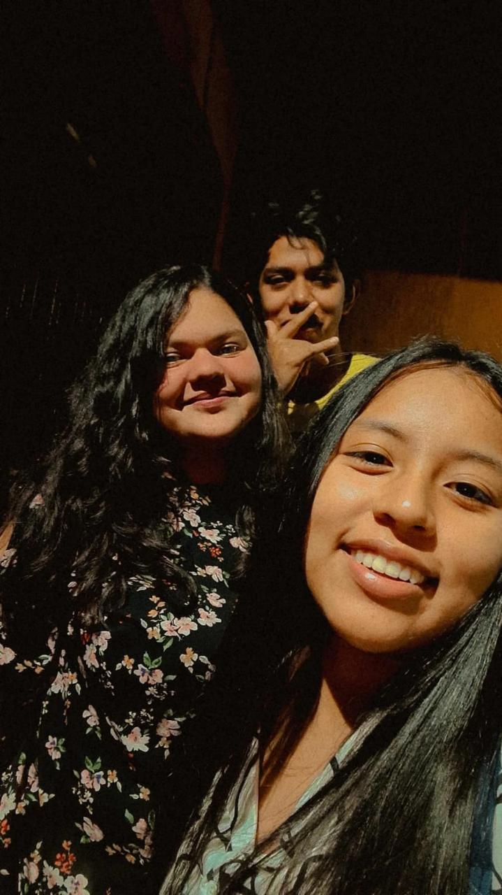
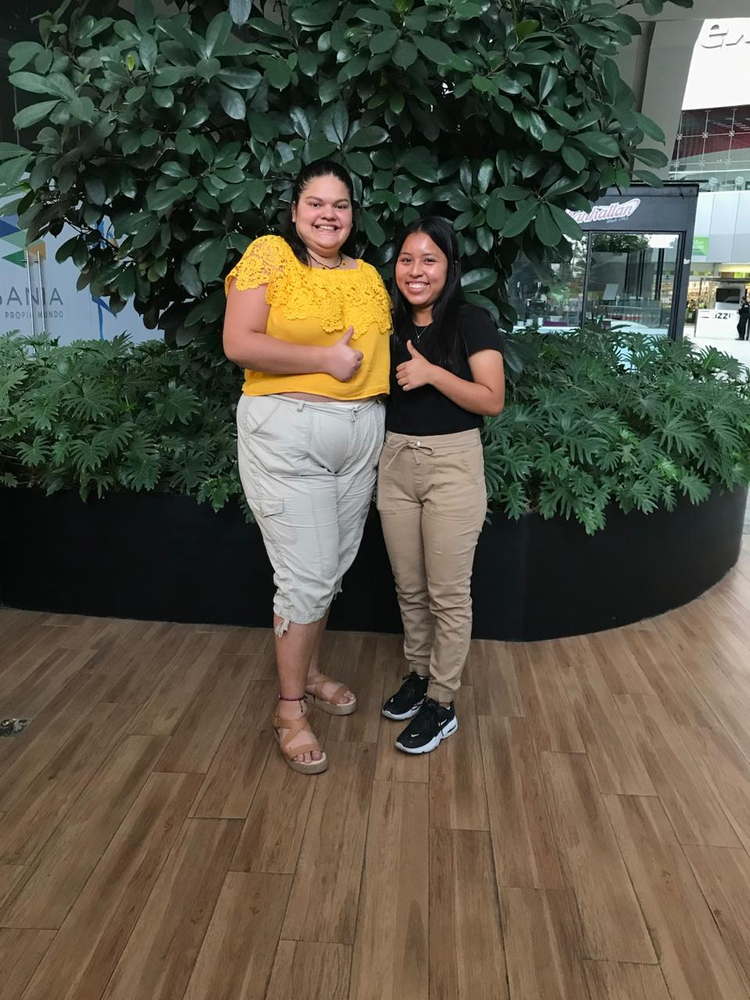
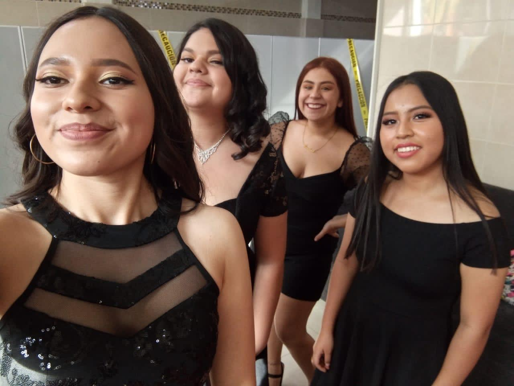
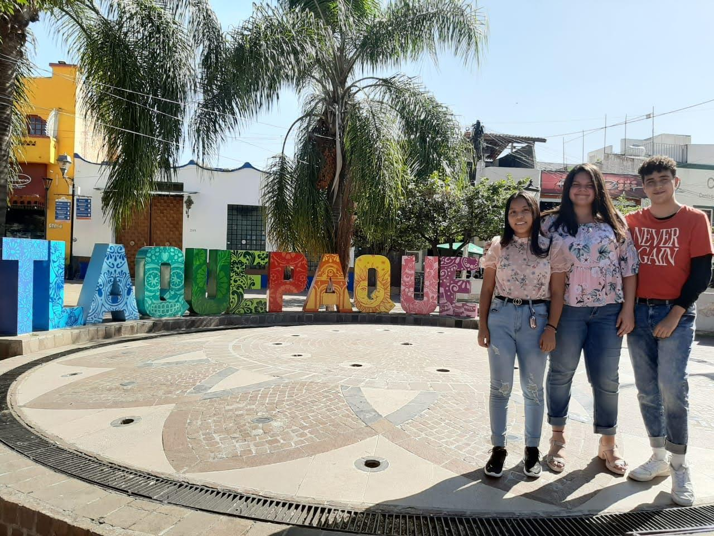
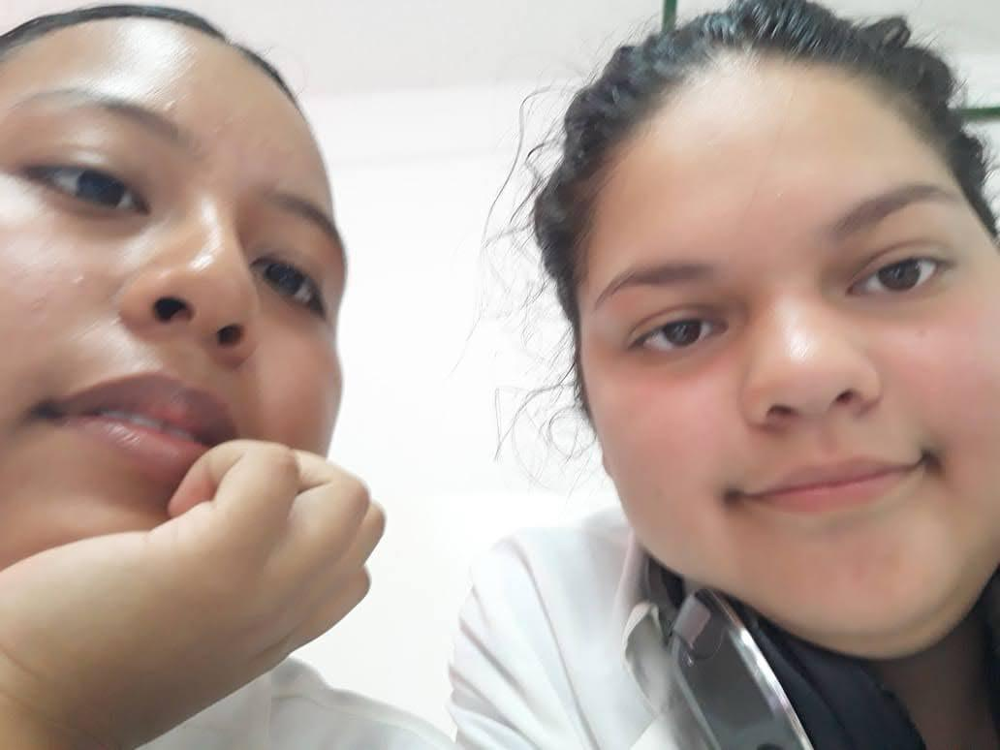
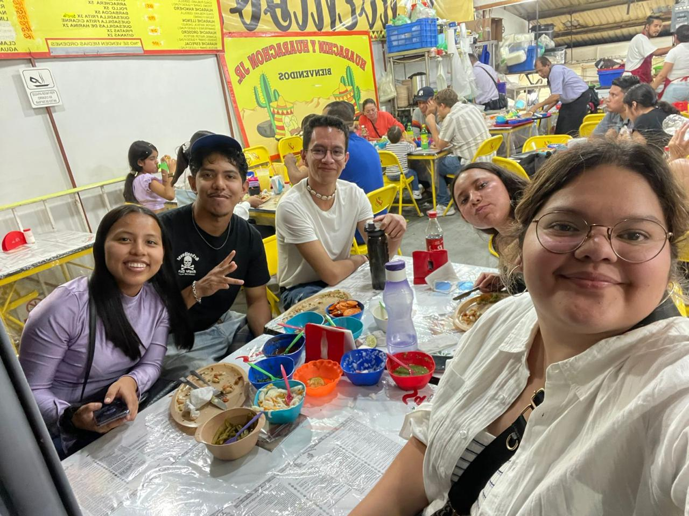
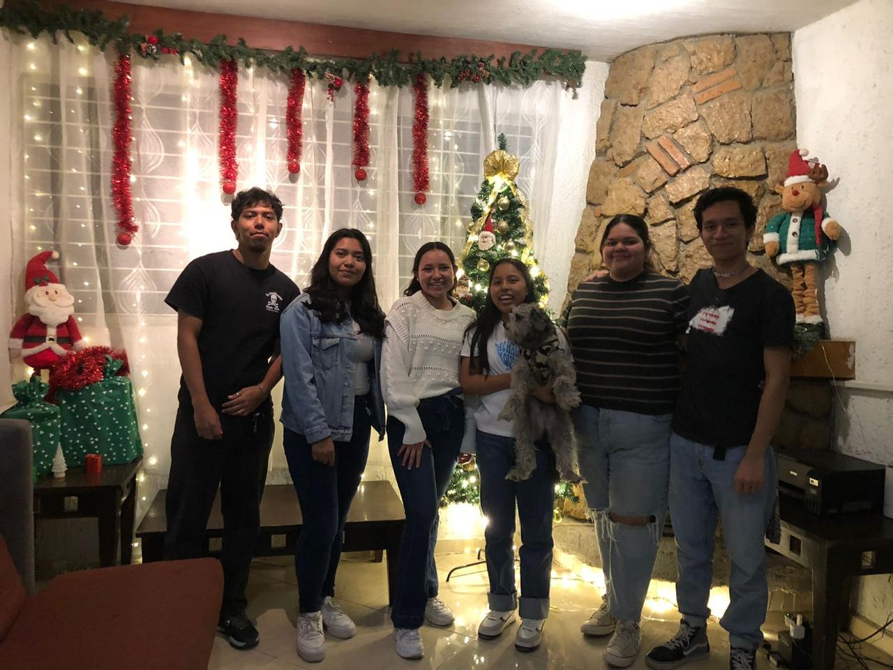
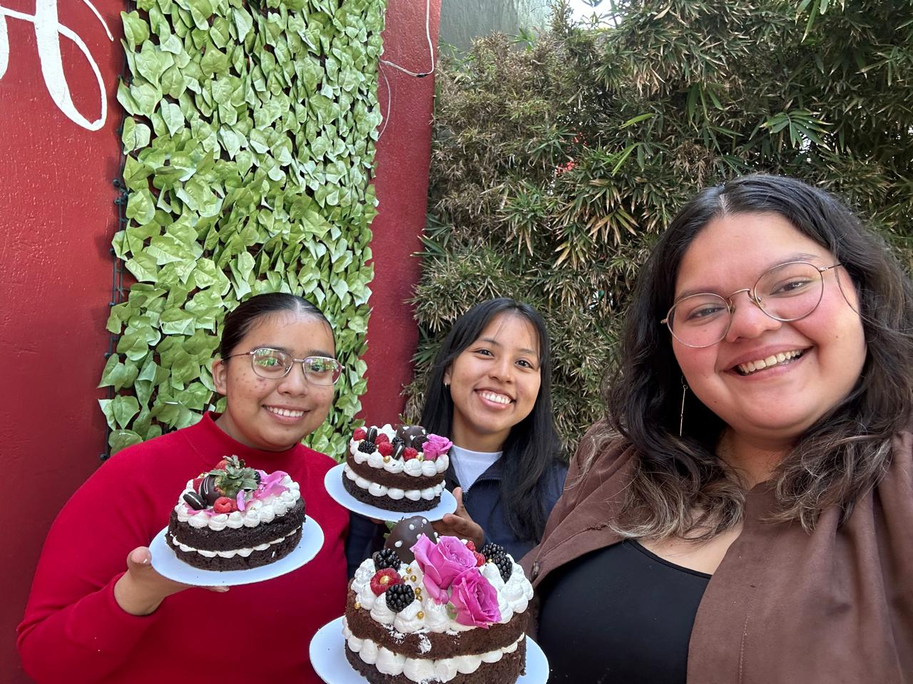
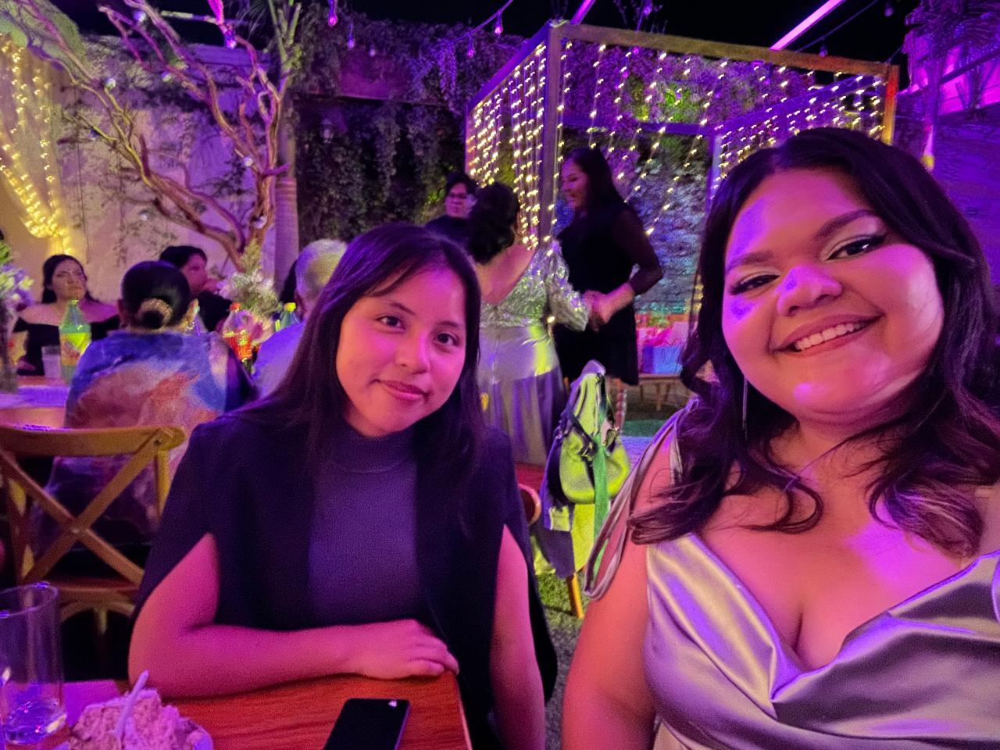

Estoy tan feliz de este comienzo en tu vida, mi corazón está tan feliz de verte llena de tanta alegría, emoción, un poco de miedo y nervios por este nuevo comienzo, pero con esa sonrisa y esa valentía que tanto admiro de ti siempre, que sé que cualquier adversidad que se ponga en el camino la afrontarás de la mejor manera Deseo que en esta etapa te permitas vivir y disfrutar cada una de las cosas que acontezcan, que tu corazón se llene de nuevas experiencias, que encuentres nuevas personas que te amen tanto como los que te conocemos lo hacemos, que tengas muchas nuevas oportunidades, que vean lo trabajadora y talentosa que eres, que las puertas estén abiertas frente a ti y no temas en cruzarlas. Espero que aprendas muchísimo en este camino, y también espero que aunque sientas miedo o soledad sepas que todo saldrá muy bien y quienes te aman te envían todo su amor y fuerza para cuando más lo necesites Por mi parte te extrañaré muchísimo y mis lágrimas salen de mis ojos al saber que vas a estar lejos, pero no hay nada que consuele más mi corazón que imaginarte cumpliendo tus sueños, verte con esa sonrisa y ese entusiasmo por lo que te tiene la vida preparado vale más que cualquier atisbo de tristeza que quiera pasar por mi mente Quienes te amamos estaremos acompañándote a la distancia en esta nueva etapa. Disfrútala muchísimo bebé, te mando abrazos y besos siempre y cuando necesites hablar o algo ni si quiera veas el reloj para saber qué hora es, solo escríbeme o llámame ok? Desearía estar a tu lado en este capítulo de tu historia bb, pero también estoy muy feliz de admirarte desde aquí Y ya sé que no te vas por un eternidad, pero luego me pongo a pensar que te puedes quedar a vivir allá y poner un restaurante muy exitoso y que se te pegue el acento español JAJAJJAJA y me da sentimiento pues Pero bueno, volviendo al tema, aunque sea solo por un tiempo me da mucho alegría, emoción y miedo a mi también y por eso quería escribirte esto, te amo y siempre estoy aquí para ti, sé que todo va a salir excelente y que vas a venir con muchas historias nuevas que contar te amo inmensamente, y mi corazón siempre va con el tuyo❤️ Posdataaa: Quiero saber absolutamente todo, así que, por favor vuélvete tiktoker si? Jajaja;









